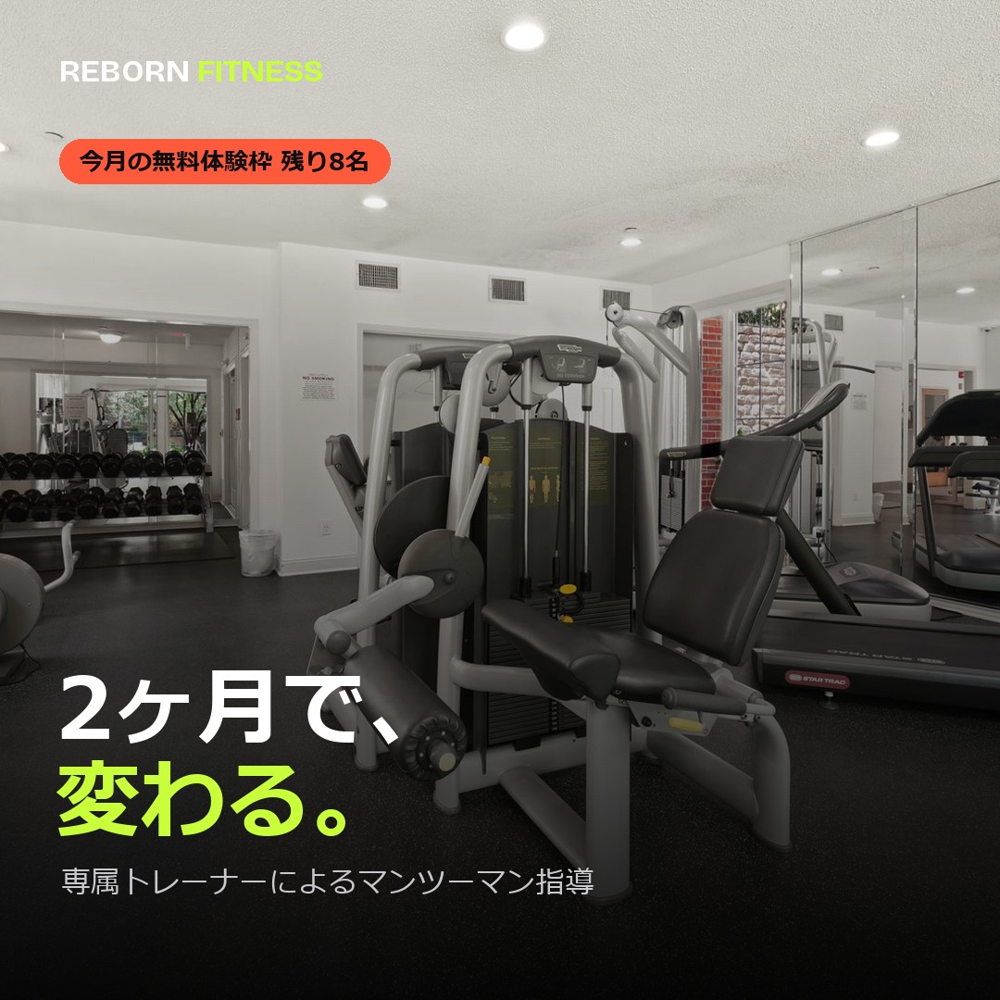
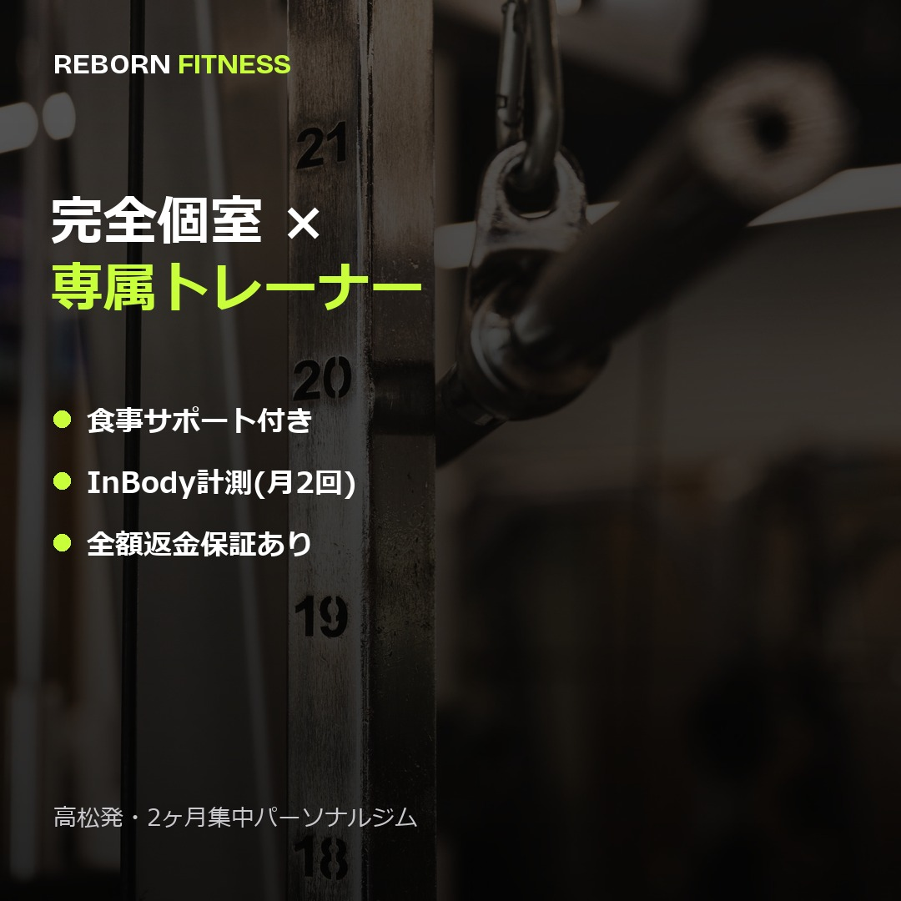
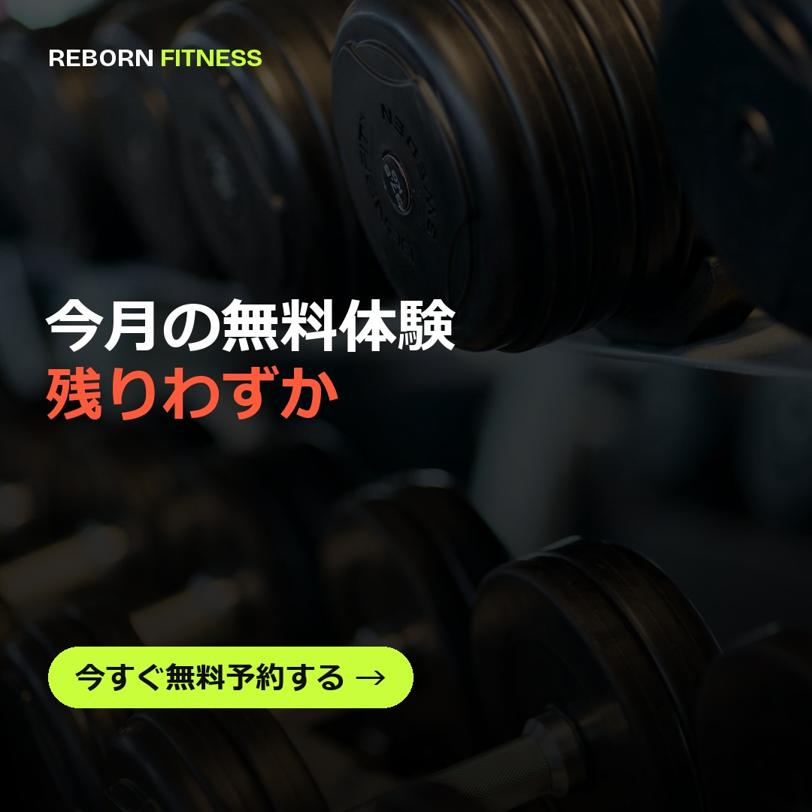

SOCIAL AD CREATIVE
REBORN FITNESSのLPと同じブランドトーンで制作した、Instagram/Facebook広告用の正方形クリエイティブ3点セットです。 認知(Awareness)→ 信頼訴求(Trust)→ 行動喚起(CTA)の3段階で構成し、配信目的に応じて出し分けられるようにしています。



※これは架空店舗によるポートフォリオサンプルです。写真はフリー素材(Pexels、商用利用可)を使用しています。